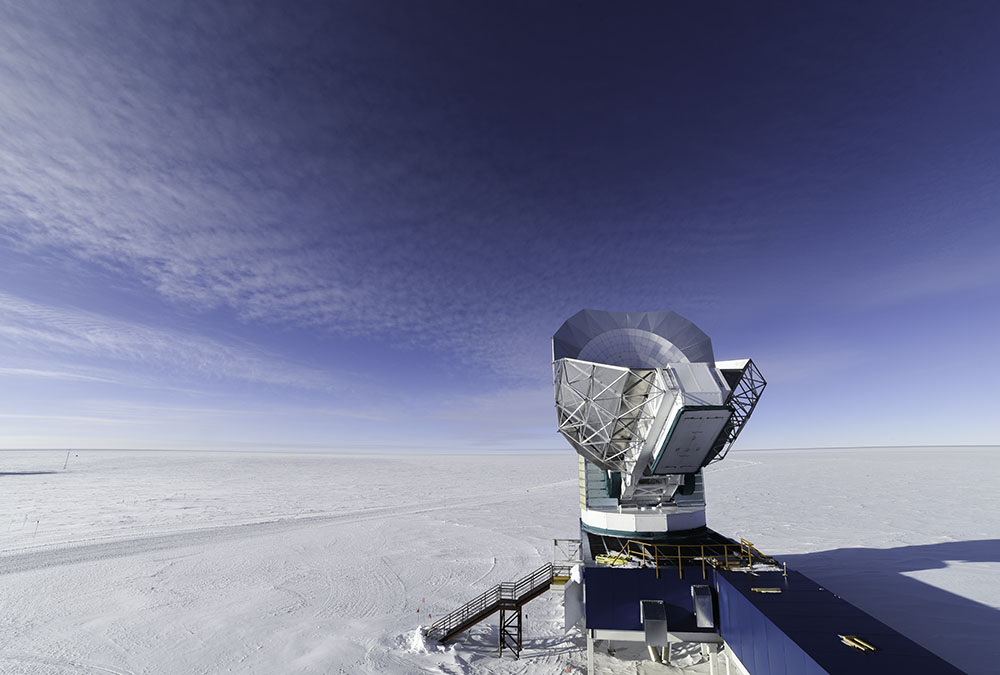
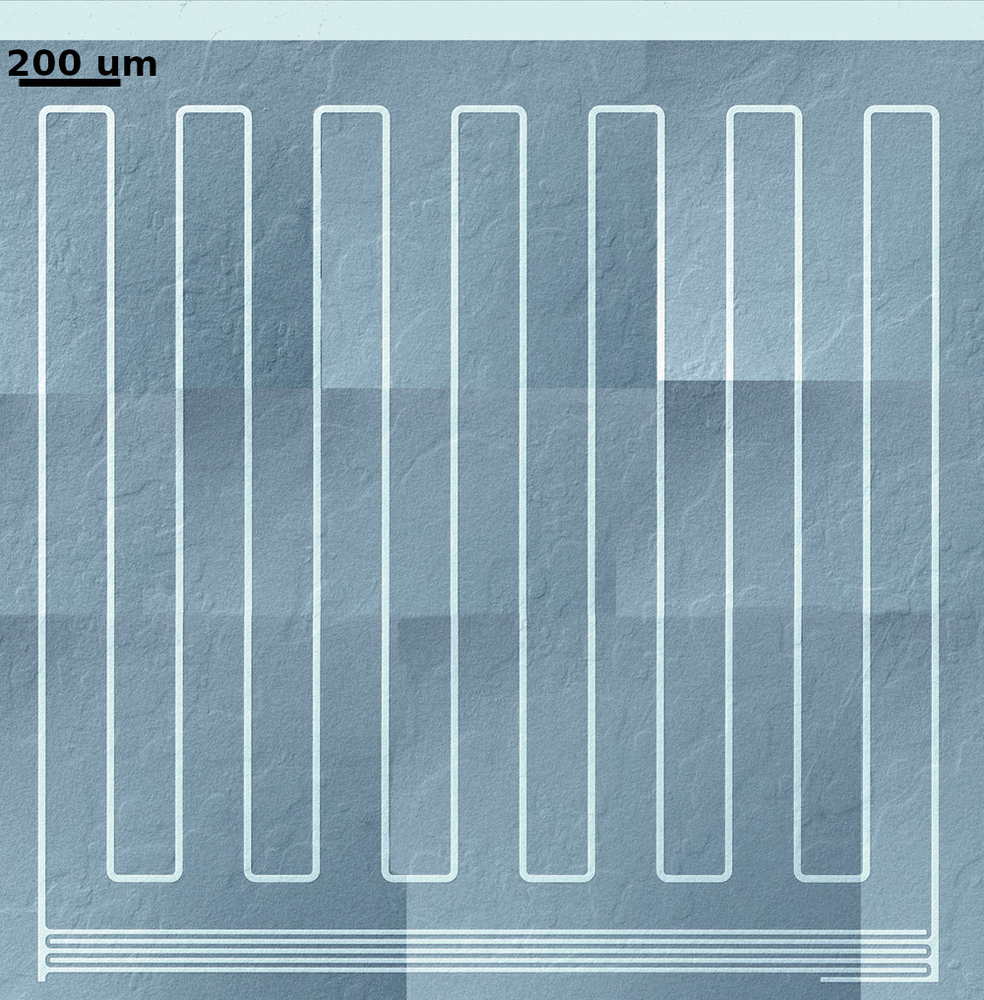
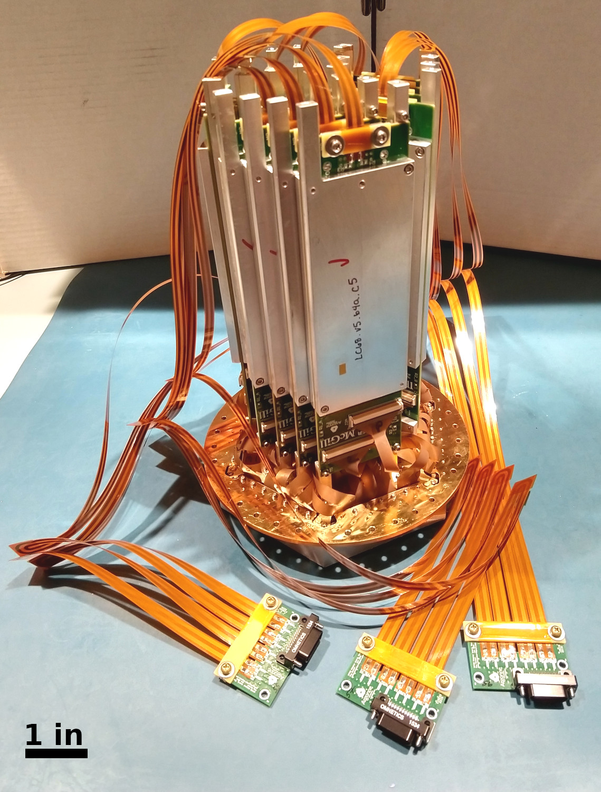

Amy Lowitz 

Postdoctoral Scholar
lowitz AT uchicago dot edu
University of Chicago
Kavli Institute for Cosmological Physics
5640 S Ellis Ave
Chicago, IL 60637
Of Public Interest
Research
Sometimes I work on big things:



And sometimes I also work on computer vision and image processing things.
Full CV and Dissertation
- CV: PDF (last updated 8/2019)
- Thesis: PDF
Selected Publications
A.E. Lowitz, A.N. Bender, et. al., Performance of a low-parasitic frequency-domain multiplexing readout. J. Low Temp. Phys., arXiv:1907.09035 (2020)
A.E. Lowitz, A.N. Bender, M.A. Dobbs, A.J. Gilbert, Digital frequency multiplexing with sub-Kelvin SQUIDs. Proc. SPIE 10708: Millimeter, Submillimeter, and Far-Infrared Detectors and Instrumentation for Astronomy IX, 107081D (2018)
A. E. Lowitz, Kinetic Inductance Detectors for CMB Polarimetry at 100 GHz. PhD Thesis. Dec 2016.
A. E. Lowitz, A. D. Brown, and T. R. Stevenson, P. T. Timbie, and E. J. Wollack, "Design, fabrication, and testing of a TiN/Ti/TiN trilayer KID array for 3 mm CMB observations."
Proceedings of the 16th International Workshop on Low Temperature Detectors, Grenoble, FR, July 2015. JLTP.
A. E. Lowitz, A. D. Brown, and T. R. Stevenson, P. T. Timbie, and E. J. Wollack, "Design, fabrication, and testing of lumped element kinetic inductance detectors for 3 mm
CMB Observations," Proc. SPIE 9153, Millimeter, Submillimeter, and Far-Infrared Detectors and Instrumentation for Astronomy VII, 91532R (July 23, 2014);
doi:10.1117/12.2057102.
A. E. Lowitz, E. M. Barrentine, S. R. Golwala, and P. T. Timbie, "A Comparison of Fundamental Noise in Kinetic Indictance
Detectors and Transition Edge Sensors for Millimeter-wave Applications," Proceedings of the 15th International Workshop on Low Temperature Detectors,
Pasadena, CA, June 2013. JLTP (2014). DOI 10.1007/s10909-014-1133-5.
arXiv1403.3601.
Invited Talks
- "Measuring the Cosmic Microwave Background with SPT-3G and Beyond," Illinois Institute of Technology, Chicago, IL, 4 April 2019 (academic colloquium)
- "Cosmology at the End of the Earth," Ethical Humanist Society of Chicago, Chicago, IL, 17 March 2019 (public lecture)
- "Nuts and Bolts Cosmology," 88th biannual Arthur H. Compton Lecture Series, Enrico Fermi Institute, University of Chicago, Chicago, Il, Fall 2018 (8-lecture public lecture series)
- "Detector and Readout Architectures for mm-wave Cosmology with SPT3G and Beyond," Cornell University, Ithaca, NY, 26 February 2018 (academic talk)
- "Kinetic Inductance Detectors for CMB Polarimetry at 100 GHz," University of California - San Diego, La Jolla, CA, 31 July 2017 (academic talk)
- "100 GHz Kinetic Inductance Detectors for CMB Polarimetry," University of Illinois - Urbana-Champaign Department of Astronomy, Urbana, Il, 8 Jun 2017 (academic talk)
- "Kinetic Inductance Detectors for 100 GHz CMB Polarimetry," Kavli Institute for Cosmological Physics, University of Chicago, Chicago, Il, 17 Mar 2017. (academic seminar)
- "A Brief History of the Cosmic Microwave Background," Sunday Science Lecture Series, South Pole Station, Antarctica, 6 November 2016 (public talk)
- "Detecting the Cosmic Microwave Background," Madison Astronomical Society, Madison, WI, 21 February 2015 (public talk)
- "The Cosmic Microwave Background," IceCube High School Internship Program, Madison, WI, 20 February, 2014 (public lecture)
- "The Cosmic Microwave Background," Madison Astronomical Society, Madison, WI, 10 January, 2014 (public lecture)
- "A Comparison of Fundamental Noise Limits in TESs and MKIDs," Keck Institute for Space Studies, 2nd Superconducting Nitride Detector Workshop. Pasadena, CA, 21 February 2012 (academic talk)